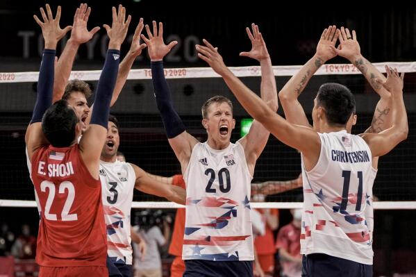
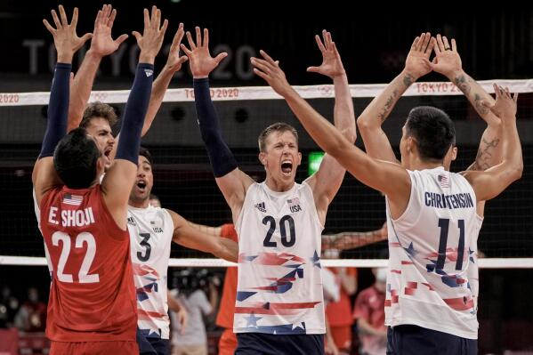

Why Volleyball is Amazing
Volleyball is a sport that promotes teamwork, communication, and agility. Whether played on the beach or indoors, it brings people together and keeps them active.
The game is played with six players on each team, aiming to send the ball over the net and land it in the opponent’s court while preventing them from doing the same.
Volleyball consists of passing, setting, and hitting. If it all gets done consistently, you find yourself winning in no time!